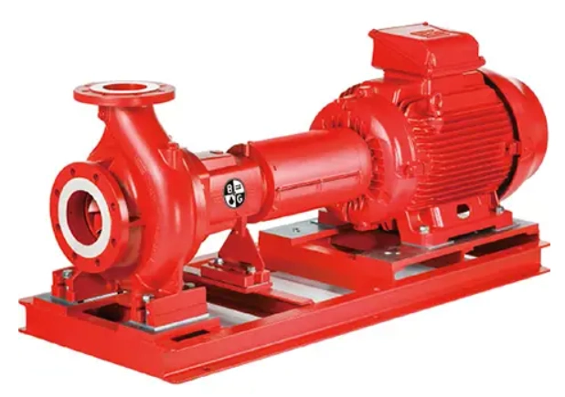
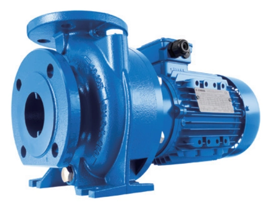
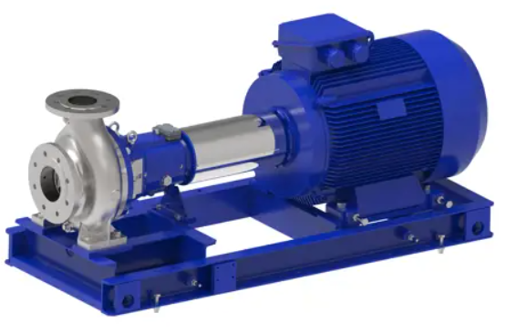

Reliable centrifugal pump solutions for water supply, HVAC, and industrial processes.

High hydraulic efficiency, flexible installation options, robust construction, and low life cycle cost for a wide range of water supply, HVAC, and industrial applications.

The e-NSC end suction pump delivers high efficiency with flexible installation options, material configurations, and temperature capabilities. It is widely used for water transfer, heating and cooling systems, fire protection, and various industrial applications.

Designed according to ISO 2858 and ISO 5199 standards, the e-IXP is a heavy-duty industrial pump designed for reliable operation across demanding process applications, with flexible material and mechanical seal configurations.
Contact our team for product selection, technical support and quotation assistance.
Request a Quote